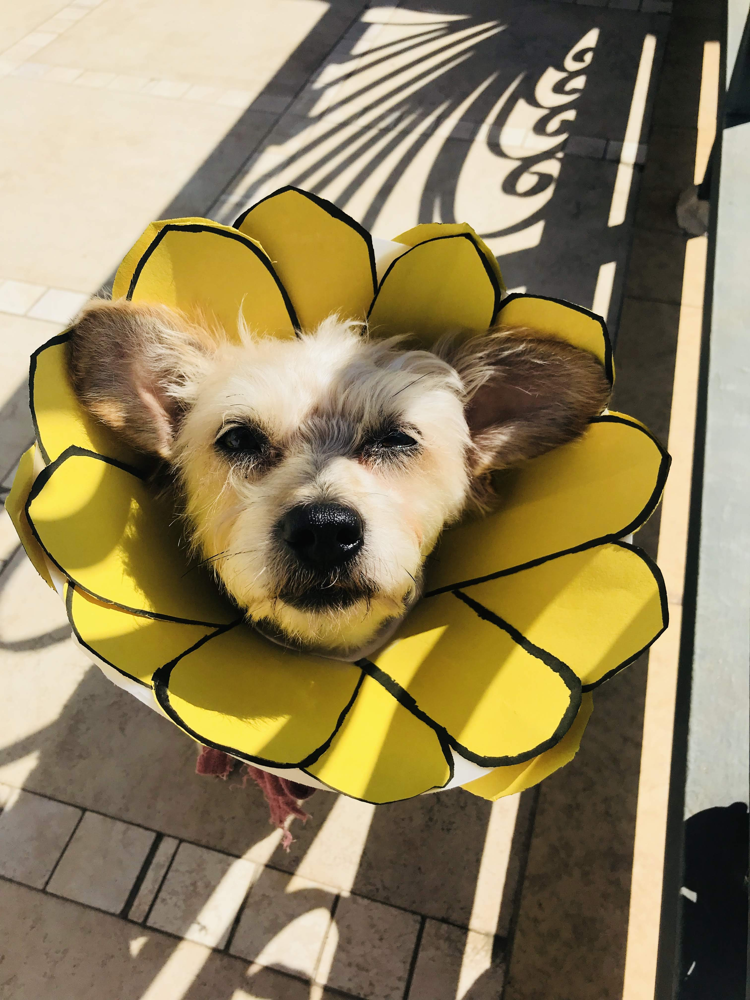

Welcome to Mushu's corner, where every wag of the tail is a story waiting to be told. Mushu isn't just any ordinary Yorkshire Terrier; he's a bundle of personality, charm, and canine wisdom wrapped in a furry coat. At the sprightly age of ten, Mushu has mastered the art of stealing hearts and spreading joy wherever his paws take him. Mushu's journey into our lives began through adoption, marking the start of an inseparable bond filled with love and companionship. Rescued from uncertainty, Mushu found solace in our home, quickly establishing himself as the reigning monarch of the household with his endearing antics and irresistible charm. Food is more than sustenance for Mushu; it's a passion, a delight, and an endless adventure. From gourmet treats to homemade delicacies, Mushu's discerning palate knows no bounds. His enthusiastic anticipation at meal times is a spectacle to behold, as he dances around with twinkling eyes, eagerly awaiting his next culinary delight.
But it's not just food that ignites Mushu's zest for life; it's the promise of a leisurely stroll through the neighborhood that truly sets his tail wagging. With each step, Mushu explores the world with boundless curiosity, sniffing out new scents and greeting fellow furry friends with an enthusiasm that knows no bounds. His love for walks is contagious, inviting us to embrace the simple pleasures of life alongside him. Beyond his culinary escapades and outdoor adventures, Mushu is a maestro of tricks and mischief. His repertoire of tricks knows no bounds, from the classic "sit" and "stay" to the more complex "roll over" and "play dead." Yet, beneath his playful exterior lies a streak of independence that manifests as his signature moodiness. Like any true diva, Mushu isn't afraid to express his feelings, whether through a disdainful glance or a dramatic sigh. In Mushu, we've found not just a pet but a cherished member of the family—a source of laughter, love, and endless entertainment. His tenacity, resilience, and unwavering spirit serve as a reminder that age is just a number, and the true essence of life lies in embracing each moment with boundless enthusiasm. So here's to Mushu—the pint-sized powerhouse with a heart of gold and a personality as vibrant as his fur. May his days be filled with endless treats, exhilarating walks, and an abundance of love, reminding us all to live life to the fullest, one wag at a time.